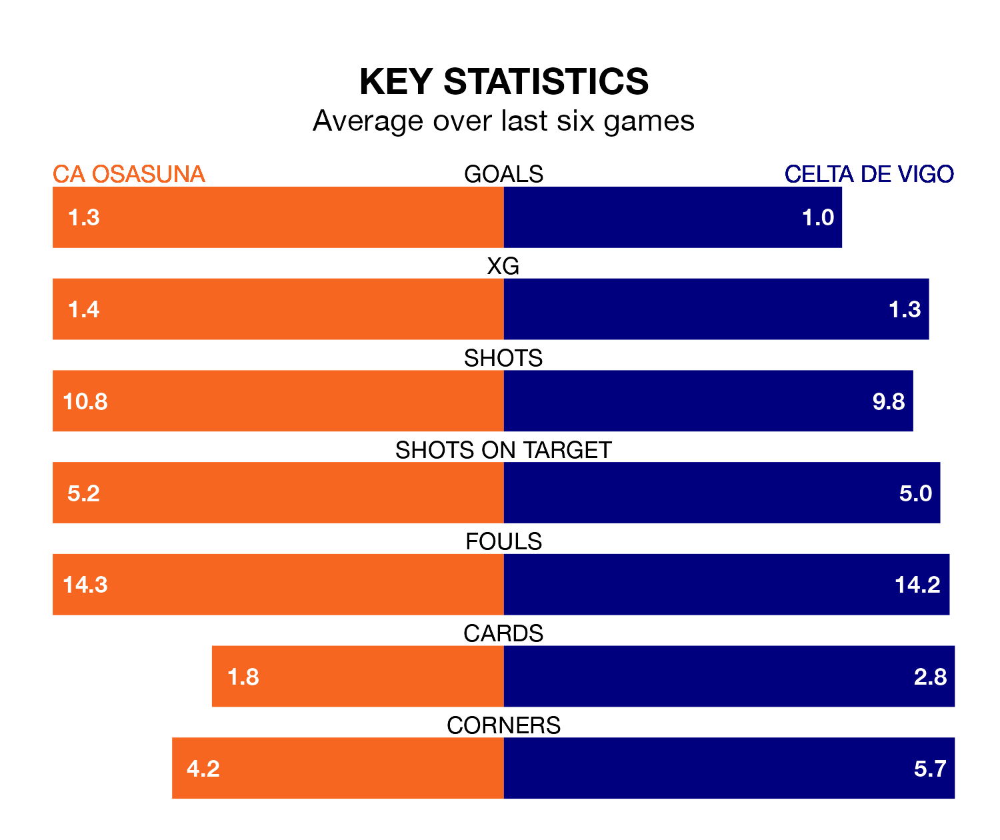

CA Osasuna host Celta de Vigo on Sunday at the Estadio El Sadar in La Liga.
In their last league match, on Wednesday, Osasuna lost to FC Barcelona 1-0 away.
Celta also lost, 1-0 at home against Girona on January 28.
In the last 10 years, Osasuna and Celta have played each other on 12 occasions. They won four each, and they drew four times.
On average, Osasuna scored 0.8 goals and Celta 1.0 in those matches.
Their last meeting was on August 13, when Osasuna won 2-0 away.
Celta are 17th in the table after 22 games, of which they have won three and drawn eight, earning 17 points.
Osasuna are five places ahead of the away side in 12th, with seven wins and five draws putting them on 26 points.
With 21 goals in 22 games so far this season, Celta are scoring at below the league average rate with 1.0 goals per game. And they are conceding more than average, letting in 32 goals at a rate of 1.5 per game.
The hosts are also below average scorers, with 1.2 goals per game, compared to a league average of 1.3. They have conceded 1.5 goals per game.
In Ante Budimir, Osasuna have one of the league's most on-form strikers so far this season. He has notched 10 goals in 22 appearances, to sit sixth in the scoring charts.
His goal rate of one every 164 minutes is quicker than that of Jørgen Strand Larsen, Celta's top scorer with a goal every 253 minutes, and a total of seven goals in 22 games.
Osasuna are in mixed form in La Liga, with three wins and a draw from their last six games.
With two wins and a draw over that period, the visitors' form is worse – they have taken seven points from 18, compared to the home team's 10.
Sunday's match will be refereed by Javier Alberola Rojas, who has taken charge of eight La Liga games so far this season, issuing one red card and booking 37 players. He has awarded four penalties.
The last Celta game Alberola Rojas refereed was the 2-1 loss away at UD Las Palmas on October 2. He is yet to oversee a match featuring Osasuna this season.
Updated: 15:45 (UTC), 02/02/24